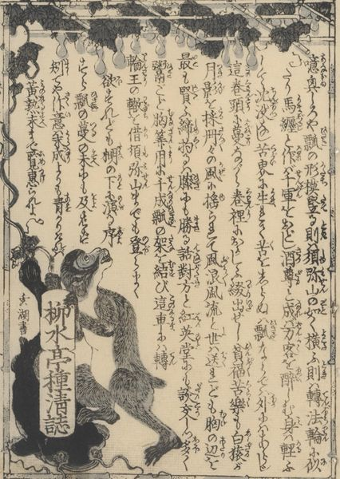

← 图鉴索引

千成瓢の棚の下に鯰と猿がいる。
著作者：柳水亭種清作・梅蝶樓國貞画／出典：親書誌：U426_nichibunken_0447：戀車淀翡翠／日付：2017／資源識別子：U426_nichibunken_0447_0002_0000
Copyright (c)2010- International Research Center for Japanese Studies, Kyoto, Japan. All rights reserved.